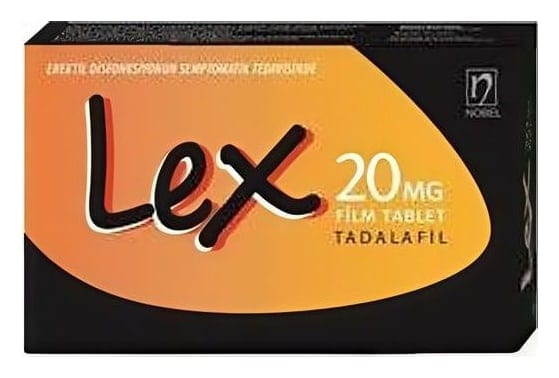

Lex 20 mg Film Tablet ,8 Flm Tablet

Ne için kullanılır
KT · Bölüm 1LEX 20 mg, sarı renkli film kaplı tabletler halindedir. Damla şeklinde bombelidirler ve bir yüzünde “20” yazılıdır. 2, 4 veya 8 tabletlik blister ambalajdadır.
LEX, yetişkin erkeklerde erektil disfonksiyon tedavisi için kullanılan bir ilaçtır. Erektil disfonksiyon, cinsel aktivite için gerekli penis sertleşmesinin sağlanamaması veya sertliğin korunamaması durumudur. LEX’in cinsel aktivite için uygun penis sertleşmesinin sağlanması yeteneğini önemli ölçüde geliştirdiği gösterilmiştir.
LEX, tadalafil etkin maddesini içeren, fosfodiesteraz tip 5 inhibitörleri olarak adlandırılan ilaç
grubuna dahildir. Cinsel uyarıyı takiben LEX, penis içerisindeki kan damarlarının gevşemesine yardımcı olarak kanın penis içerisine akışını sağlar. Bunun sonucunda peniste sertleşme gerçekleşir. Eğer sertleşme sorununuz yoksa LEX yardımcı olmayacaktır.
Cinsel uyarının olmadığı durumlarda LEX’in tek başına işe yaramayacağı önemle göz önünde bulundurulmalıdır. Bu nedenle sizin ve partnerinizin, sertleşme sorunu tedavisi için ilaç almıyormuş gibi, ön cinsel aktivitede bulunması gerekmektedir.